Education, Reform, and Religion Shaped Song Social Life
Advancement, family resources, and practical responses to uncertainty.
GovernmentHouseholdsLocal religious life
Educated culture · Review Question 5
Printing Expanded Access to Books and Educated Culture
Cheaper books Printing lowered the cost of books.
→
More readers More readers could obtain classics, poetry, histories, and works on other subjects.
→
Exam demand Demand for books grew with preparation for government examinations.
The educated elite became larger, better educated, and less aristocratic in its habits.
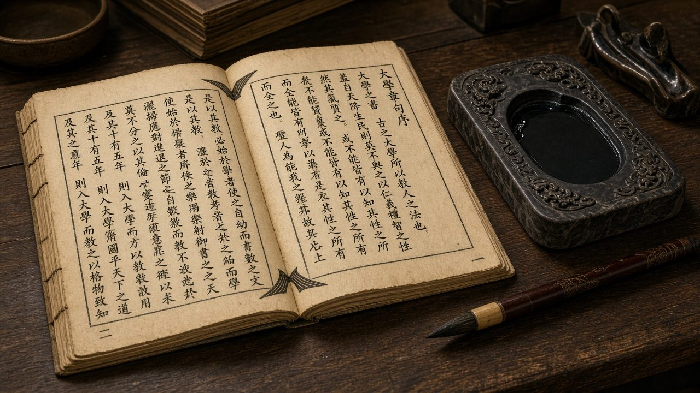
Song-era woodblock-printed book
AI-generated illustration of a Song-era woodblock-printed book.
Source: Ebrey, A History of China, ch. 8, p. 134.
The examinations · recruitment and fairness
Examinations Expanded Recruitment and Sought Fairer Evaluation
More degrees
Song recruited more holders of the highest examination degree (jinshi) than Tang had.
Numbers, not names
Candidate names were replaced with numbers.
Recopied papers
Clerks recopied papers so examiners could not recognize handwriting.
Growing competition made success difficult and often required repeated attempts.
Anonymous evaluation reduced opportunities for favoritism.
×
Jinshi
"Presented scholar": the highest examination degree identified in this chapter. It brought great prestige, but not a guaranteed career or rapid promotion.
Source: Ebrey, A History of China, ch. 8, p. 135.
Opportunity and privilege
Family Resources Continued to Shape Access to Office
Expanded opportunities
Examinations could identify capable men beyond established official families
Anonymous papers reduced examiner favoritism
Successful candidates gained prestige
Continuing advantages
Sustained education required family resources
Prominent families supplied teachers, contacts, and support
Senior officials could nominate sons and grandsons for appointments
Source: Ebrey, A History of China, ch. 8, pp. 135–136.
Scholar-officials · culture and networks
Scholar-Officials Participated in a Broad Cultural World
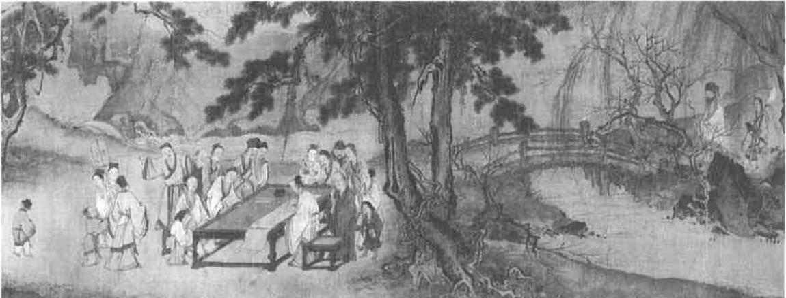
The Scholarly Life · Ma Yuan hand-scroll
The Scholarly Life, detail of a hand-scroll by court painter Ma Yuan (active 1189–1225): a scholar writes a poem as others watch. Nelson-Atkins Museum of Art, Kansas City (63-19). Photo: John Lamberton. Reproduced in Ebrey, p. 135.
Study, examinations, and officeholding brought educated men into extensive networks.
Poetry, painting, and collecting expressed cultivated identities.
Source: Ebrey, A History of China, ch. 8, pp. 135–136.
Scholar-officials · the art of the cultivated mind
Su Shi (Su Dongpo, 1037–1101)
Exiled to Huangzhou after the 1079 poetry trial, he wrote the Cold Food poems shown here.
Painting should express the artist's mind and ideas, not mere outward likeness: a founding idea of literati (scholar-amateur) painting.
Expressive calligraphy: heavy, deliberately uneven strokes; characters grow and shift as feeling rises.
Poetry, painting, and calligraphy as one art of the cultivated mind.
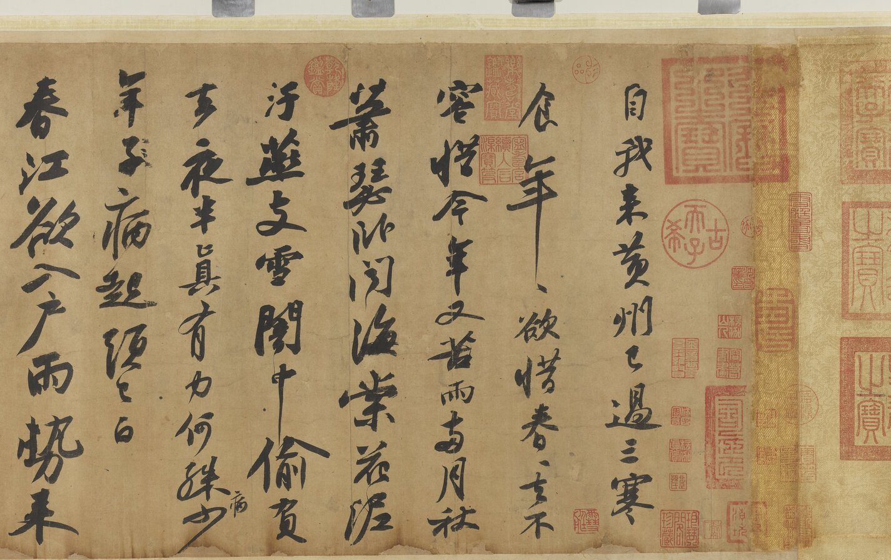
Cold Food Observance (Huangzhou Hanshi shi tie), detail, handscroll, ink on paper, written after 1082 in Huangzhou. National Palace Museum, Taipei. Public domain (CC0), via Wikimedia Commons." class="active" aria-hidden="false">
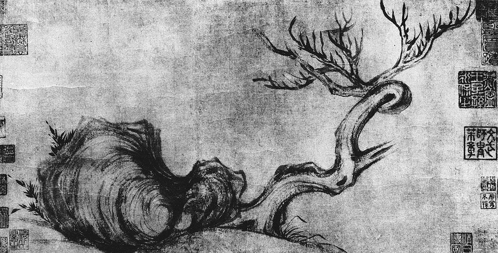
Withered Tree and Strange Rock (Kumu guaishi tu), Northern Song, ink on paper. Location unknown; reproduced from Zhongguo meishu quanji (1988). Black-and-white reproduction. Public domain, via Wikimedia Commons." aria-hidden="true">
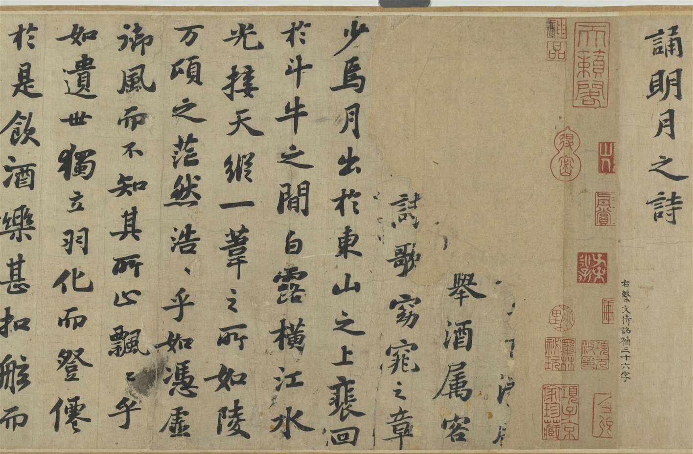
Former Ode on the Red Cliff (Qian Chibi fu), detail, handscroll, ink on paper, written 1083; the only surviving Red Cliff ode in his hand. National Palace Museum, Taipei. Public domain (CC0), via Wikimedia Commons." aria-hidden="true">
Su Shi, Cold Food Observance (Huangzhou Hanshi shi tie), detail, handscroll, ink on paper, written after 1082 in Huangzhou. National Palace Museum, Taipei. Public domain (CC0), via Wikimedia Commons.
Scholar-officials · curiosity about the natural world
Shen Gua (1031–1095)
Dream Pool Essays (c. 1088, written in retirement near Zhenjiang): hundreds of short notes on astronomy, math, fossils, medicine, music, technology, and court life.
Earliest clear description of the magnetic compass needle and of magnetic declination.
His book is our only source for Bi Sheng, a commoner who invented movable type (c. 1040s) using baked-clay characters.
He reasoned about fossils and worked on the calendar and maps.
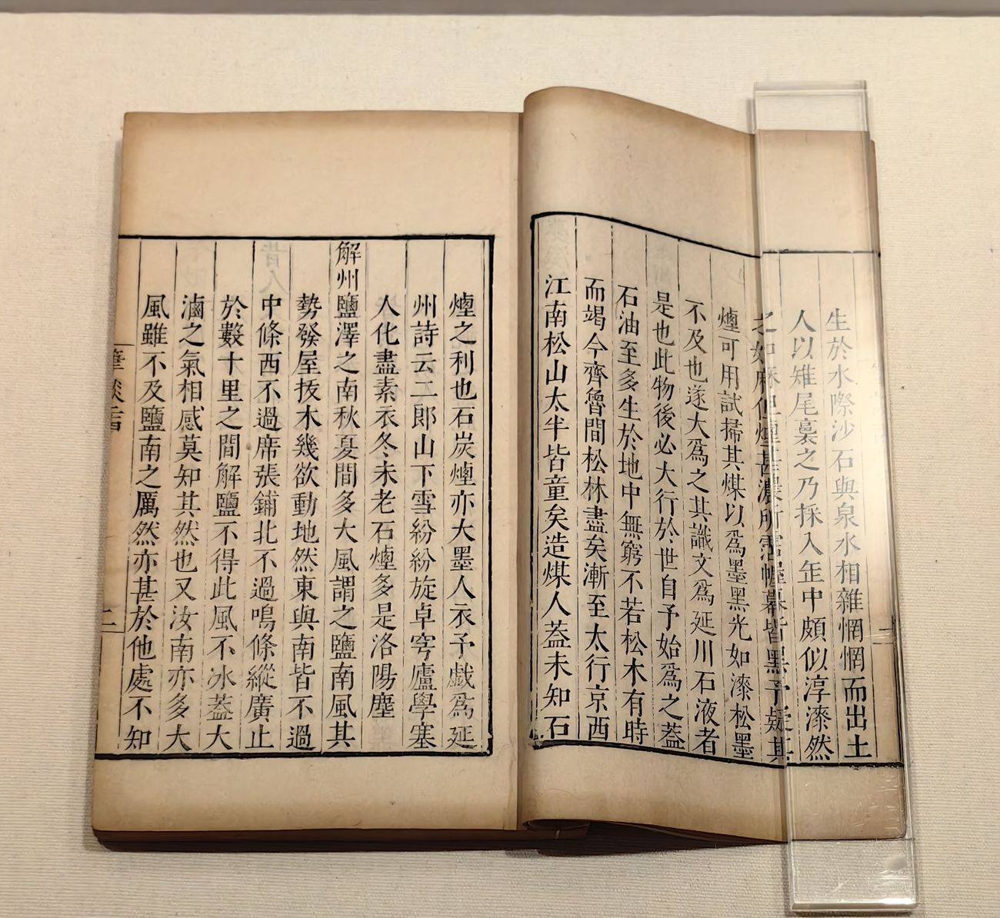
Dream Pool Essays · Ming edition
Shen Gua's Dream Pool Essays (Mengxi bitan), 26 juan, woodblock edition of the Chongzhen era (1628–1644), Ming dynasty. A later printing; no Song-era copy is shown. Photo: Auongkinghe, CC BY-SA 4.0, via Wikimedia Commons.
×
Magnetic declination
A compass needle doesn't point exactly to true (geographic) north. It points to magnetic north, slightly east or west of true north. Shen Gua noticed this gap, which navigators must correct for.
Reform · the 1040s
Reformers Wanted Officials to Serve the State More Effectively
The problem: officials disagreed about recruitment, public service, military policy, and revenue.
Fan Zhongyan (989–1052), a poor orphan, rose through the exams and commanded troops on the Xia frontier.
His Qingli reforms (1043–1045) proposed promotion by merit, not seniority, and limits on officials' sons' privileges. See all ten points
Officials whose privileges were threatened ended them within about two years, but Fan inspired later reformers, including Wang Anshi.
"Be the first to worry about the troubles of the realm, and the last to enjoy its pleasures."
先天下之憂而憂，後天下之樂而樂
Fan Zhongyan, Record of Yueyang Tower (1046)
×
Fan Zhongyan's Ten-Point Memorial (1043)
Promote and demote officials by merit and performance, not seniority.
Curb yin, the privilege that let high officials obtain posts for their sons.
Reform the exams toward policy essays and practical learning, and build schools.
Choose capable local officials.
Equalize the stipend lands that supported officials, so local officials had enough income.
Encourage farming and water-control works.
Strengthen local militia and defense.
Reduce labor-service burdens.
Make sure imperial acts of grace actually reach the people.
Enforce laws and edicts faithfully.
Source: Ebrey, A History of China, ch. 8, pp. 136–137.
Reform · the man behind the New Policies
Wang Anshi (1021–1086)
Born in Jiangxi; passed the jinshi exam in 1042.
Spent years as a local official; as magistrate of Yin county he tried state loans to farmers.
1058: his "Myriad Word Memorial" to Emperor Renzong urged sweeping reform.
1069: young Emperor Shenzong summoned him to lead reform. He was also a celebrated poet and prose writer.
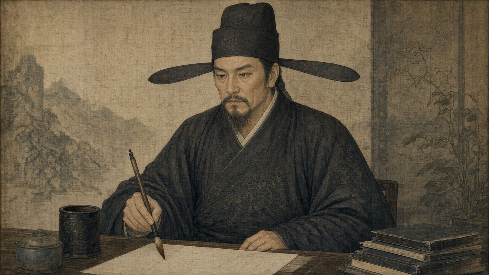
Wang Anshi · imagined likeness
AI-generated imagined likeness; no reliable portrait from his lifetime survives.
Source: Ebrey, A History of China, ch. 8, p. 137.
Wang Anshi's New Policies · Review Question 6
Wang Anshi Linked Stronger Government to Rural Prosperity
Representative New Policy
Intended purpose
Green Sprouts: low-cost loans to farming families (1069)
Support rural prosperity
Hired service: replace labor service with a tax
Change how households met state obligations
State trade (market exchange) and expanded monopolies
Raise revenue
Land survey and equitable tax
Make land taxes more equitable
Baojia mutual-security militia
Reduce the expense of the standing army
A stronger productive base could support a stronger state.
×
Labor service
Work that households owed the government. Wang Anshi replaced it with a tax.
×
Monopoly
Exclusive control over a line of trade. Wang expanded state monopolies on tea, salt, and wine.
×
Baojia (保甲)
Introduced in 1070, baojia grouped rural households into units of 10, 50, and 500 families: the bao, the large bao, and the superior bao. Members were responsible for one another, policing and reporting crime in their unit. Some men were also trained as a part-time local militia, so the state could rely less on its expensive professional standing army.
Source: Ebrey, A History of China, ch. 8, p. 137.
The reform years · 1069–1085
Shenzong Kept the New Policies Going, With or Without Wang
1069Shenzong backs Wang; the New Policies roll out, starting with Green Sprouts loans.
1074Opposition from Sima Guang, Su Shi, and others; Wang resigns.
1075Recalled as chancellor.
1076Retires for good to Nanjing.
1085Shenzong keeps the policies running until his death.
The reforms depended on the emperor's backing, not on Wang alone.
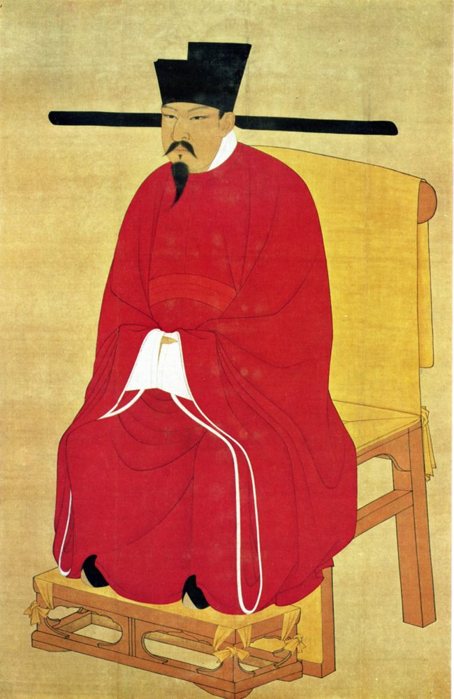
Emperor Shenzong · court portrait
Emperor Shenzong (r. 1067–1085), Song court portrait, hanging scroll, color on silk. National Palace Museum, Taipei. Public domain, via Wikimedia Commons.
Source: Ebrey, A History of China, ch. 8, pp. 137–138.
Factions · why reform divided officials
Disagreements over Reform Became Moral and Political Conflicts
Interests
Reforms affected existing arrangements and people's interests.
Philosophy
Officials disagreed philosophically about good government.
Rivalry
Competition, alliances, and personal antagonisms intensified disagreement.
Both sides portrayed themselves as principled and their opponents as morally inferior.
Disagreement about policy became a judgment about character.
Key term: faction
×
Faction
A group of officials allied around shared political positions and personal relationships.
Source: Ebrey, A History of China, ch. 8, pp. 136–137.
The court · 1085–1125
Changes at Court Reversed Policies and Punished Opponents
ShenzongUnder Shenzong, reform supporters held imperial backing.
1085–86After his death, a regency brought opponents led by Sima Guang into power; most policies repealed. Wang dies in 1086.
Successive factions reversed policies and removed opponents from influential posts. The see-saw weakened the Northern Song.
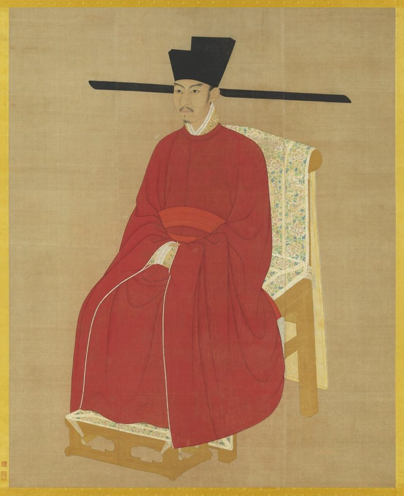
Emperor Zhezong · court portrait
Emperor Zhezong (r. 1085–1100), Song court portrait, hanging scroll, color on silk. National Palace Museum, Taipei. Public domain (CC0), via Wikimedia Commons.
×
Regent
Someone who governs for a ruler unable to exercise power independently, often a child. Here the regent was the boy emperor Zhezong's grandmother, Empress Dowager Gao.
Source: Ebrey, A History of China, ch. 8, pp. 137–138.
Pause & Process · Review Question 6 · 5 minutes
Explain the Goals and Conflict of the New Policies
What were the primary goals of Wang Anshi's "New Policies," and why did they provoke such severe factional strife within the Song bureaucracy?
Write a response of 3–5 sentences.
Identify a main goal and explain one policy intended to achieve it.
Explain a source of opposition.
Explain how disagreement escalated into factional retaliation.
2 min write on your own · 2 min compare with a partner: does the answer explain both the program and the conflict? · 1 min share a connection and revise a sentence if needed.
Review Question 6, Chapter 8 reading guide; Ebrey, A History of China, ch. 8, pp. 136–138.
Households · Review Question 10
Marriage Joined Families and Reflected Social Status
Parents arranged marriages through matchmakers or personal connections.
Families usually sought partners of comparable status.
Examination success could make a young man an attractive marriage prospect.
A man had one legal wife, but wealthy men could also take concubines: often purchased, ranked below the wife, yet their sons could be heirs.
The marriage agreement
Agreements identified family backgrounds and the gifts and dowry to be exchanged.
Birth dates of bride and groom
Parents' and grandparents' names
Gifts to be exchanged
The bride's dowry
Source: Ebrey, A History of China, ch. 8, pp. 141–142.
Property · the dowry
Dowries Transferred Resources to Daughters
A dowry was property a bride's family provided when she married.
Clothes and bedding were common; wealthier dowries could include jewelry or land deeds.
Women could draw on dowry resources in family life.
Huang Sheng's burial goods illustrate the wealth transferred to one elite daughter.
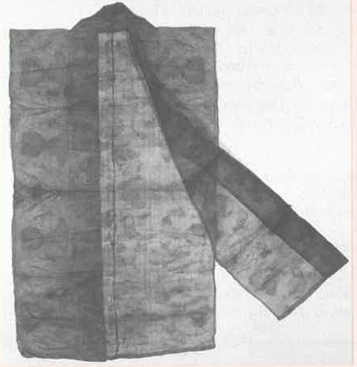
Huang Sheng's gauze vest
Gauze vest from the tomb of Huang Sheng (d. 1243), Fujian: lightweight, transparent silk gauze with a woven-in peony design. Cultural Relics Press; reproduced in Ebrey, p. 146.
Source: Ebrey, A History of China, ch. 8, pp. 141, 146.
Women's lives · work, learning, circumstance
Women's Work and Literacy Extended Their Household Roles
Work
Textile production and other work contributed to household livelihoods.
Some women worked as innkeepers, midwives, or producers of goods for sale.
Learning
Expanded education enabled some women to teach children and participate in literary culture.
Circumstances
Widowhood, motherhood, wealth, and household position shaped women's options.
Girls could not attend schools or take exams, but elite daughters often learned to read at home, valued because a literate mother could teach her sons.
Source: Ebrey, A History of China, ch. 8, pp. 141–143.
Women · rights and resources
Song Women Had Real Economic Agency
A woman's dowry stayed legally hers, and she could take it with her if widowed or divorced.
Unmarried daughters could inherit a share of family property, in some rulings half a son's share.
Wives could leave a marriage by mutual consent or if deserted, and divorced women and widows often remarried.
Scholars now see Song women as having real economic agency within a patriarchal system.
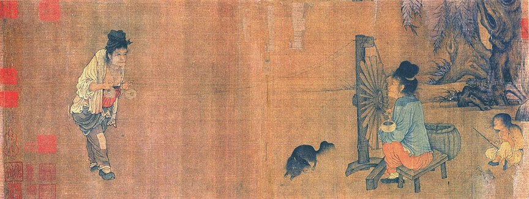
Wang Juzheng · The Spinning Wheel
Wang Juzheng, The Spinning Wheel, Northern Song (960–1127), handscroll, ink and colors on silk. Palace Museum, Beijing. Public domain, via Wikimedia Commons.
×
Dowry
The property, such as land, cash, cloth, and furnishings, that a bride brought into her marriage from her own family. In the Song it was often large, and it stayed identified as hers.
Sources: Ebrey, A History of China, ch. 8, pp. 141–143; Ebrey, The Inner Quarters (1993); Birge, Women, Property, and Confucian Reaction in Sung and Yüan China (2002).
A source · Review Question 11
Hong Mai's Stories Reveal Everyday Religious Concerns
The source
The Record of the Listener
Compiled by Hong Mai (1123–1202) · twelfth century · more than two hundred chapters
Hong Mai compiled The Record of the Listener in the twelfth century.
His stories described gods, ghosts, ancestors, illness, and unexpected events.
Tales of retribution linked wrongdoing with supernatural punishment.
The collection reveals beliefs and concerns through an educated author's account.
Source: Ebrey, A History of China, ch. 8, pp. 144–146.
The spirit realm · a simplified model
People Imagined the Spirit Realm through Human Hierarchies
In the human world
In the spirit realm, as people imagined it
People who help or harm
Gods, ancestors, and other spirits could bring blessings or misfortunes.
Rulers of a territory
Local gods could resemble territorial rulers.
Officials and paperwork
Some gods held offices, transmitted documents, and referred matters to higher authorities.
Human feelings
Spirits were understood to have emotions and interests resembling those of people.
A simplified explanatory model, not one uniform system shared by every believer.
Source: Ebrey, A History of China, ch. 8, pp. 144–145.
Religious practice · seeking help
People Used Several Religious Traditions to Seek Practical Help
Religious concern
Ways of responding
Illness or unexplained misfortune
Divination, dreams, or consultation to identify a cause
A spirit's displeasure or a need for protection
Prayer and offerings
A troubling ghost
Rituals conducted by specialists
Buddhist and Daoist clergy, mediums, diviners, and local temple specialists offered different forms of assistance.
×
Divination
A way of seeking otherwise hidden information, such as which spirit was causing a problem.
×
Medium
Someone understood to make communication with spirits possible, for example by letting a spirit speak through a person.
Source: Ebrey, A History of China, ch. 8, pp. 144–145.
A case from the chapter · one man and a ghost
One Ghost Story Shows People Consulting Different Specialists
1 · Local exorcist A man troubled by a ghost sought help from a local exorcist.
→
2 · Daoist priest When that failed, he asked a visiting Daoist priest to perform a ceremony.
→
3 · Buddhist monks Buddhist monks then performed incantations and an exorcism, which the account described as successful.
The case shows how religious assistance could cross traditions.
Source: Ebrey, A History of China, ch. 8, p. 145.
The state and local gods
The Song State Recognized and Regulated Local Gods
Regulating
The state claimed authority to approve or disapprove local shrines.
Some shrines judged illicit or excessive were destroyed.
Recognizing
More often, the government awarded titles to local gods.
Local supporters petitioned for recognition of gods credited with miracles.
Source: Ebrey, A History of China, ch. 8, p. 146.
Pause & Process · Review Question 11 · 5 minutes
Explain Interactions with the Spirit Realm
Describe the religious landscape of ordinary people during the Song Dynasty as documented in works like Hong Mai's The Record of the Listener. How did commoners conceptualize and interact with the spirit realm?
Write a response of 3–5 sentences.
Explain one way people imagined gods or spirits.
Give two examples of how people sought assistance or responded to spirits.
Use the lecture's evidence, and identify a reported belief or story as such.
2 min write on your own · 2 min compare with a partner: check for both a conception of the spirit realm and examples of interaction · 1 min share an example and make a final revision.
Review Question 11, Chapter 8 reading guide; Ebrey, A History of China, ch. 8, pp. 144–146.
Next: Lecture 4 · Neo-Confucianism Connected Cosmic Order to Moral Cultivation
Appendix · instructor use
Activity Response Criteria
Debrief guides for the two Pause & Process activities, plus the questions taught without activities.
Appendix · Activity 1 · Review Question 6
What a satisfactory answer includes
A satisfactory response should explain Wang's effort to strengthen government while supporting farming households, with an example such as low-cost loans, revised service obligations, taxation, or militia organization. It should identify opposition through affected interests, philosophical differences, or personal and career competition. It should explain escalation through moral accusations, removal from influential posts, and reversals when court backing changed. Strong responses distinguish a policy's intended benefit from demonstrated success.
Debrief corrections: Sharing an examination background did not make officials politically unanimous. Opposition cannot be reduced to a single north–south division. Policies changed through imperial and regency decisions as well as officials' arguments.
A satisfactory response should identify a populated spirit realm including gods, ancestors, or troublesome ghosts, and explain a feature such as emotional motives or bureaucratic hierarchy. It should provide two practices, such as divination, offerings, prayer, consultation with specialists, or exorcism. It may use the multi-specialist ghost story to explain overlapping traditions. Strong responses attribute accounts to Hong Mai or the chapter and use them as evidence of religious ideas and actions rather than proof of supernatural events.
Debrief corrections: The religious landscape included local practices as well as Buddhist and Daoist institutions. People could seek help across traditions. Hong Mai's official-family background matters when interpreting his accounts of ordinary people.
Slides 2–7 supply four parts of the answer: greater access to texts, expansion and anonymization of examinations, continuing family advantages, and a broader elite culture of study, artistic cultivation, and networks.
Q10 · Women, marriage, and property
Slides 15–18 teach marriage arrangements, examination prestige in partner selection, dowries and property, economic work, literacy, and differences among women's circumstances. Lecture 5 completes the question's beauty component through foot binding.